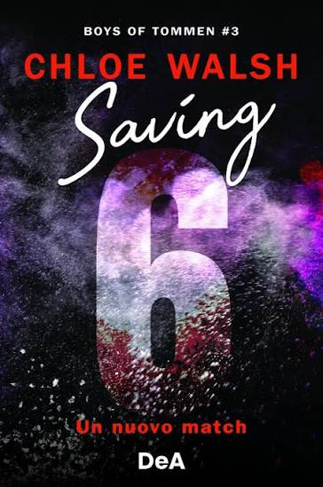

Atividade de recuperação do 2° trimestre
Julia ribeiro da Silva,n°22, 1°B. Maria Clara Choinski Faria, n°27, 1°B
Saving 6, é uma série de livros de Boys Of Tommen, onde retrata a história de Joey Linch,
um menino com muitos problemas em casa e que enfrenta um vicío, a protagonista Aiofe Molly é uma menina muito doce
e com uma grande personalidade, juntos os dois enfrentam muitas coisas difíceis,mas mesmo asssim procuram sempre ficar juntos
enfrentando as dificuldades.
É um livro que precisa ter um psicológico bom, pois apesar da ótima história, tem problemas de vicios,familiares.
Os personagem são muito cativantes, e a história é muitissima interessante.
